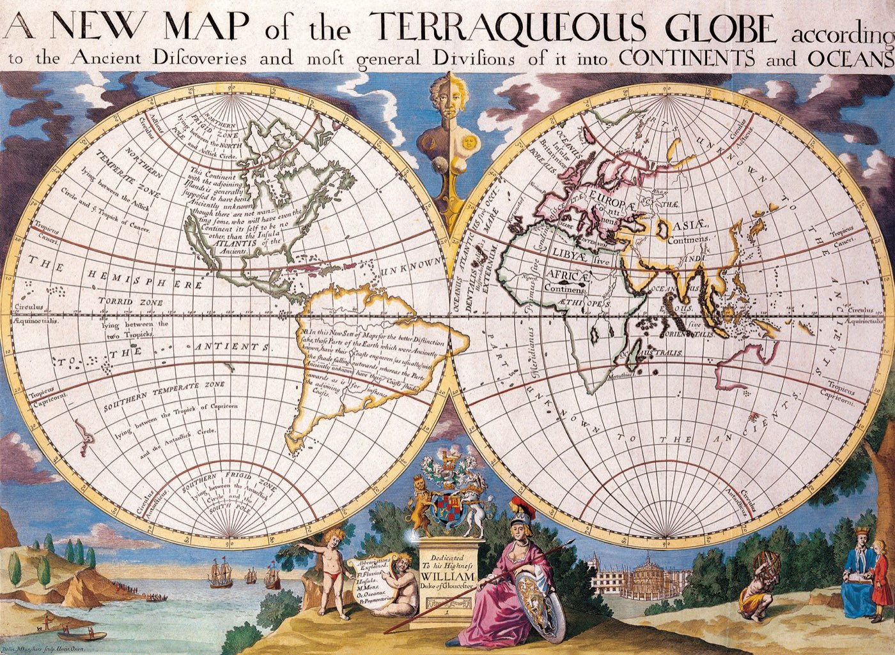
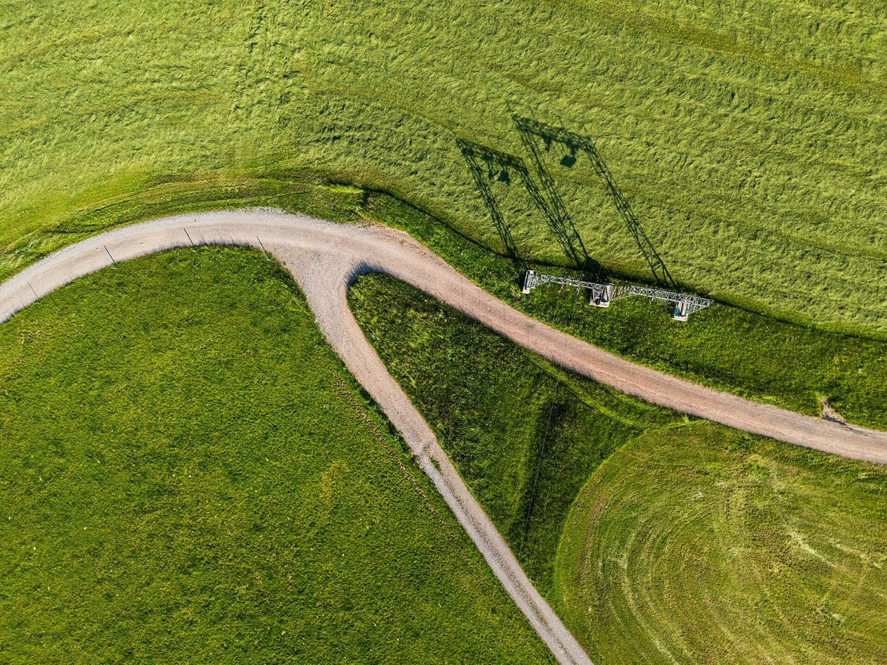

Снова новичок: AI-агенты, Cursor, архитектура процессов, цифровые сотрудники
Мой опыт никуда не исчез. Но его уже недостаточно просто повторять.
Вопрос в зал
Сверьте карту с местностью
За что в своей работе вы привыкли считать себя сильным?
Что из этого сегодня уже делается быстрее или иначе, чем ещё год назад?
Где ваша старая профессиональная карта уже начинает расходиться с местностью?
Не только код
AI не забирает профессию целиком. Он меняет то, из чего она состоит.
Разработкакод, тесты, документация, анализ
Продажиподготовка, анализ клиента, follow-up
Финансысверки, черновики, поиск отклонений
HRsourcing, документы, аналитика
Управлениепоиск информации, варианты решений, контроль процессов
Идентичность
AI бьёт не только по должности. Он попадает в ощущение «кто я в работе»
Задачаеё можно передать
Рольеё можно собрать иначе
Кто я в работесюда и попадает
Пауза
Страх здесь — часто защита собственной ценности.
Если я десять лет училась делать это хорошо, а теперь машина делает первый результат за минуту — я могу услышать не «у тебя появился инструмент», а «твоя экспертность больше ничего не стоит».
Схема
Карта ещё в руках. Местность уже другая

КартаЗнание копится. Роль устойчива. Опыт даёт определённость.

МестностьЗнание быстрее устаревает. Роль пересобирается. Опора — обновлять картину мира.Dietmar Rabich, CC BY-SA 4.0
Разворот
Меняется не инструмент. Маршрут
Копить знание и охранять его
Быстрее обновлять картину мира
Эксперт не бывает новичком
Эксперт умеет снова им стать
Ускорить старый шаг
Решить, нужен ли этот шаг вообще
Развилка
К любой задаче — три направления
Человек
Это всё ещё должен делать человек?
AI
Это может делать AI — и где ему нельзя?
Не делать
Это вообще ещё нужно делать так?
Из моей работы
В какой-то момент вопрос изменился
Раньше я спрашивалакак автоматизировать этот процесс?
Теперь всё чаще спрашиваюа зачем он вообще устроен именно так?
Разработкакод → контекст / архитектура / результат
Роль шире ≠ эксперт во всём.
Глубина остаётся. Порог входа в соседние области становится ниже.
43,5% за пределами традиционной границы профессии
OpenAI Economic Research, Work at the Frontier, 2026.
Unlearning
Learning уже недостаточно
Научив людей учиться, разучиваться и переучиваться, можно добавить образованию новое измерение.
Alvin Toffler, Future Shock, 1970. Перевод. Оригинал: “By instructing students how to learn, unlearn and relearn, a powerful new dimension can be added to education.”
Unlearning — не забыть профессию.
Unlearning — не обесценить свой опыт.
Отложить модель, которая больше не описывает реальность.
Снова я
Новичок — не значит с нуля
Бег
Велосипед
Вода
Можно много лет уметь бегать — и снова оказаться новичком на велосипеде или в воде.
Опыт остаётся. Но он не отменяет необходимость учиться заново.
Эксперт будущего умеет снова становиться новичком — не выбрасывая свою биографию.
Практика
Не предсказывать. Перерисовывать
Нам не нужна правильная карта на следующие десять лет. Нам нужен хороший механизм постоянно её перерисовывать.
01Увидеть, что уже изменилось
02Разложить: человек, AI, больше не нужно
03Отпустить одну устаревшую модель
04Попробовать новую
05Посмотреть, что вышло, и обновить карту
Участие
Риск — остаться зрителем своей же работы
У нас есть редкая возможность не ждать, пока новая работа станет стандартом.
Мы можем пробовать собирать её сейчас.
Интересное — не значит лёгкое.
Dietmar Rabich, CC BY-SA 4.0
Финал
Старая карта перестаёт работать — это не значит, что мы заблудились.